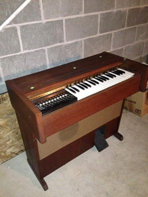

|
Posted 24-Mar-15 |

Volunteer Singers / MusiciansOur Parish Priest, Fr Mick Peters, is trying to development and foster a community for our 6 PM Vigil Mass at St Josephs on the Strand. Invited members will bring a plate for a buffet and music is provided by friends who can sing or perform. Now that we are achieving some success, we need more people who can sing or play music. All kinds of song genre or performance are welcomed so long as it is not too controversial. An artist to sing a medley of old time favorites would be preferable. Mass starts at 6pm and finishes about 7pm. If you are interested, please call Merle Trembath 0418882633 |
|
Posted 21-Mar-15 |

CALLING ALL MUSOSCalling all Muso’s, entertainers, performers. We are looking to book performers/musicians/entertainers for a family friendly festival at the Ingham Tyto Wetlands on the 23rd of May. This inaugural annual event is a family fun day in the parklands and we are looking for appropriate acts. We are looking for a wide variety of bands and entertainers from our local and surrounding areas. Deadline for initial submissions 29 March 2015. Include your details, examples or links to your work, and a quotation for performing(including travel expenses) in the email. If you are interested, please email the Event Stage Manager Emile Griffiths mutec.audio@gmail.com |
|
Posted 17-Mar-15 |
Chord Organ Rouvas Academy of SingingI have been in the music industry in Sydney for over 30 years in the capacity of singing teacher, stage performer, singer and musician. My daughter Diana Rouvas was a finalist in the 2012 “The Voice” television show and she is a testament to what can be achieved with correct vocal training. Allow me to show you her technique and give yourself the opportunity to excel as a vocalist. Skype lessons also available Visit rouvasacademyofsinging.com.au |
|
Posted 09-Mar-15 |
Chord Organ MusicAre you struggling to master sections of your pieces at tempo? Are you stressing that you won’t be prepared because you don’t have enough time to practice? Would you like to learn efficient and effective practice skills and strategies to help you play those difficult sections with confidence and ease and to the best of your ability? Visit us on Facebook |
|
Posted 17-Mar-15 |
Metropolitan Opera 2015Would you like to see Metropolitan Opera productions screened in Townsville? The Metropolitan Opera’s award-winning series of operas in HD continues featuring ten operas captured live in high definition direct from New York, and screening concurrently with the NY season. Event Cinemas are considering on bringing the Metropolitan Opera HD series to Townsville. If you would like to encourage them to go ahead, please email Alexis at support@eventcinemas.helpserve.com with a simple message such as, ‘Please bring Met Opera to Townsville’. You may of course add additional comments if you wish. Should you decide to contact Alexis, the Music Centre would appreciate receiving a copy of your email, as it will help us assess the level of support from the Townsville arts community. Please copy your email to admin@townsvillemusic.org.au For more information, click here |
|
Posted 16-Mar-15 |
Office Administrator required!The Townsville Community Music Centre is getting busier all the time, and we need a part-time Office Administrator.
|